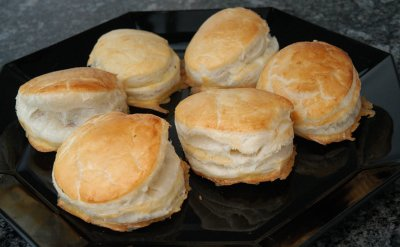

| Zutaten für 16 Stück: | |
| 500 g | Blätterteig |
| 150 g | Champignons |
| 1 EL | Gourmet Butter |
| 1 | Zwiebel |
| 1 EL | Petersilie |
| 4 EL | Reis |
| 2 | Eier |
| Salz, Pfeffer | |
Zubereitungszeit: 25 Minuten
Backzeit: 15 Minuten
Reis kochen.
Champignons (oder andere Pilze) in feine Scheiben schneiden.
Fein gehackte Zwiebel in Butter anziehen lassen. Champignons zufügen und kurz mitdämpfen. Gehackte Petersilie und Reis zugeben, gut mischen.
Die Mischung aus der Pfanne nehmen, etwas erkalten lassen, dann ein verquirltes Ei darunter ziehen. Salzen und pfeffern.
Blätterteig 3 mm dünn auswallen. Rondellen von ca. 6 cm ausstechen. Auf die Hälfte der Plätzchen 1 TL Füllung geben. Den Rand mit Eiweiss bestreichen. Mit einer Teigrondelle decken und fest andrücken. Mit Eigelb bestreichen und bei 200° ca. 15 Minuten backen. Warm servieren.
Passt als Apérobeilage oder zu Suppen.
Pro Stück: 154 Kalorien, 645 Joule
Herbert Eigenmann, Code: PRC
Am 16.2.2008 zubereitet. Ich habe den Teig 4 mm dick ausgewallt und eine Rondelle als Deckel auf eine Bodenrondelle mit Füllung gelegt. Das gibt schöne runde Türmchen die aber nicht mehr ganz Mundgerecht sind. Also das nächste mal kleinere Rondellen oder die Rondellen - wie im Rezept beschrieben - auf sich selber falten. RE
@LINKBACK_TAG@ @WAKELOCK@